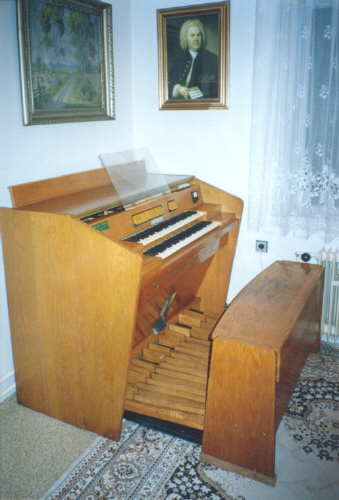
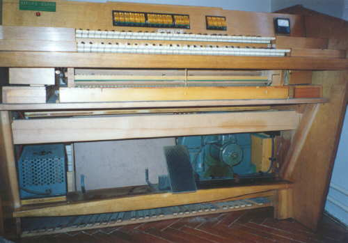
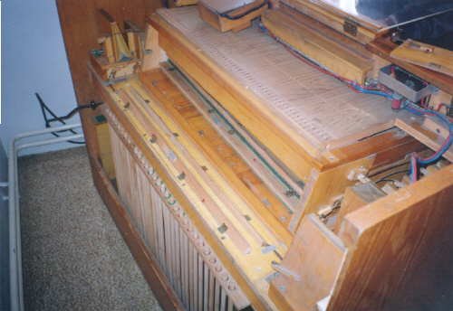
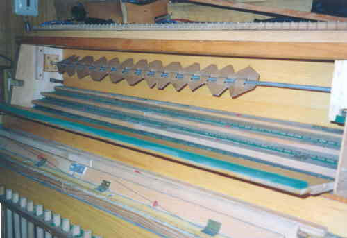
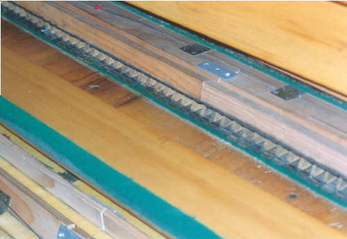

Jazýčkové
varhany (Reed Organ) PETROF
B-RK1
Tyto domácí (cvičné) varhany byly vyráběny koncem šedesátých let (nástroj na obrázcích pochází z roku 1968) pod značkou PETROF, výroba komponentů a kompletace však probíhala ve firmě Rierer-Klos v Krnově. Nástroj je dvoumanuálový, má čtrnáct rejstříků (včetně dvou šestnáctistopých viz. dispozice na konci stránky) a samostatný pedálový stroj. Hrací traktura (pokud při přímém ovládání ventilu lze ještě o traktuře vůbec mluvit) je mechanická, rejstříková traktura je elektropneumatická (elektromagnet ovládá ventil mezirelé, po jeho sepnutí se odsaje vzduch z ovládacích míšků a ty pak táhnou příslušné klapky či žaluzie). Vzduchový systém je sací (měch udržuje podtlak, ventilátor fouká vzduch ven z nástroje, podobně jako u harmonia). I když se jedná o poměrně malý nástroj, jeho zvuk je dosti mohutný a určitě by stačil i pro ozvučení velkého prostoru. |
|  | Celkový pohled na nástroj. |

Pohled
do odkrytovaného nástroje zepředu po odsunutí pedálů. Pod klávesami je
vidět dvě řady jazyků druhého manuálu (mezi zeleným plstěným obložením,
žaluzie je odstraněna, zbývá po ní ovládací klička zcela napravo). Dole
je zleva - elektrický zdroj pro rejstříkovou trakturu (trafo s usměrňovačem
a filtrem na 24Vss), sací měch a ventilátor. Šlapka ovládá žaluzie všech
strojů (prvního a druhého manuálu a pedálu). Tyto žaluzie jsou navíc ovládány
i míšky rejstříků (Forte). |


Vrtule tremulátoru a pod ní tři řady jazyků prvního manuálu.

Dispozice:
I. Manuál
Clarinetto
16'
Principál
8'
Flauto d´amore
8'
Oboe
8'
Forte I. man.
II/I
8'
II. Manuál
Violino
8'
Arpa aeolia
8'+8'
Flauto
4'
Forte II. man.
Vibrato
Pedál
Subbas
16'
Violoncello
8'
Forte Ped.
Kolektivy
Piano Mezzoforte Fortissimo Vypínač kolektivů